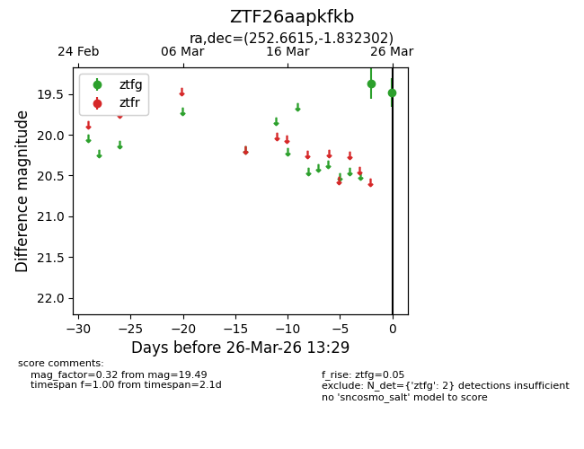
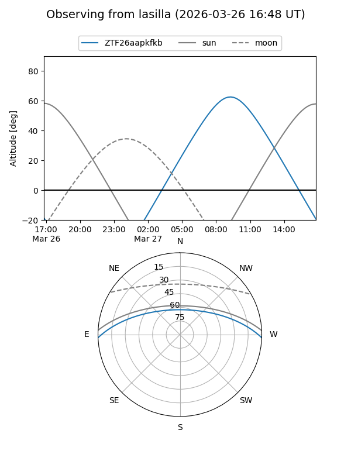
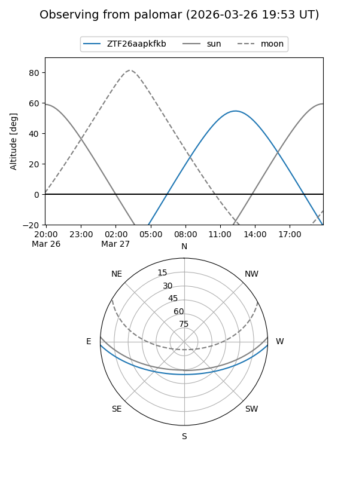

ZTF26aapkfkb
Target ZTF26aapkfkb at 2026-03-26 13:31
Aliases and brokers:
FINK: link
Lasair: link
ALeRCE: link
alt names
ZTF26aapkfkb (ztf,fink_ztf)
Coordinates:
equatorial (ra, dec) = 252.6615,-1.83230
equatorial (HMS+DMS) = 16:50:38.75,-01:49:56.29
galactic (l, b) = (16.3216,+25.64834)
Flags:
Photometry:
last ztfg=19.49
2 ztfg detections
Lightcurve

Visibility


Additional plots